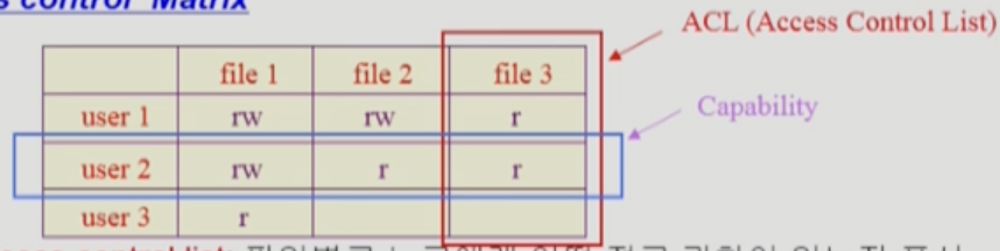
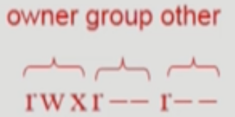

이화여자대학교 컴퓨터공학과 반효경 교수님의 "운영체제 (KOCW)" 강의를 필기한 내용입니다.
강의를 듣고 필기한 내용이기에, 다소 잘못된 부분과
부적절한 언행이 포함되어 있을 수 있습니다.
File 이란?
- 이름을 통해 접근할 수 있는 정보들의 집합 을 File 이라고 하더라
- 일반적으로 너가 아는 것들 이외에도
- Linux 에서는 다양한 장치들도 File 로써 관리된다 → 표준입출력이나 디스크들도 Linux 에서는 파일로 관리된다
- 그리고 당연히 디스크같은 비휘발성 저장장치에 저장된다
File Operation
- Create, Delete
- Open, Close
- 파일의 Metadata 를 메모리에 적재하는 것을 Open
- 메모리에서 내려 다시 디스크에 저장하는 것은 Close 라고 한다.
- 파일을 읽거나 쓰기 위해서는 반드시 Open 되어있어야 하고 작업이 끝난 이후에는 Close 를 해야 한다.
- Read, Write
- Reposition (lseek)
- 파일입출력할때 생각해보면 포인터 (커서) 가 있어서 어디까지 읽었는지를 기억하자네
- 이 포인터 (커서) 의 위치를 딴데로 옮기는 연산을 Reposition (lseek) 이라 한다.
File Metadata (Attribute)
- 이름에서 유추할 수 있듯이
- 파일 자체의 내용이 아니고 파일의 유형, 크기, 권한 등의 파일을 설명하는 정보들을 File Metadata 혹은 File Attribute 라고 한다
File System
- File System 은 당연히 운영체제에서 파일을 관리하는 부분을 의미한다.
- 이놈은 파일, Metadata, 디렉토리 계층구조, 저장 방법이나 보안성 부분을 관리한댄다
Directory, Partition
- Directory 는 뭐 너가 아는 그 폴더가 맞는데
- 좀 더 정확하게 정의해보면 거기에 속한 파일들의 메타데이터 전부 혹은 일부를 내용으로 갖고 있는 파일을 Directory 라고 한다
- Partition 혹은 Logical Disk 는 하드웨어 디스크가 아닌 하드웨어 디스크를 쪼개서 논리적으로 여러개의 디스크를 사용하는 것과 같은 효과를 내게 하는 것을 의미한다
- 이렇게 파티션을 나눠서 File System 을 설치하거나 Swap area 를 마련하는 등으로 활용한다.
File Open Operation
- 위에서 잠깐 봤지만 좀 더 깊게 드가보자고

- 사용자 프로세스는
/a/b경로의 파일을 열기 위해open시스템 콜을 한다 → 당연히 IO 작업이니까 직접 하지는 못하고 시스템 콜을 사용해야 한다 - File System 이 Root (
/) 에서부터 재귀적으로 파일의 위치를 찾아나가기 시작한다- Root 디렉토리의 위치는 File System 이 알고 있기 때문에 일단 이놈을 open 한다
- Open 하게 되면 그놈의 메타데이터가 메모리에 올라가게 되는데, 메모리의 커널 영역 중 Open File Table 이라는 곳에 올라가게 된다
- Open File Table 은 시스템 전체에 대해 열려있는 파일의 메타데이터가 테이블 형식으로 저장되어 있는 메모리의 커널 영역 중 한 부분이다
- Root 의 메타데이터를 통해 Root Directory 의 Content 위치를 찾아내게 되고, 여기에는 하위 파일들의 메타데이터가 저장되어 있기 때문에
a의 메타데이터를 찾아서 마찬가지로 Open File Table 에 올린다 (Open 한다) - Open → Content Reference 작업을 반복적으로 수행한다.
- 즉,
a의 메타데이터를 이용해a의 Content 에 접근하고, 여기에서b의 메타데이터를 찾아 Open File Table 로 올리며 그것을 이용해b의 Content 에 접근한다.
- 즉,
- 경로의 파일에 접근했다면, 해당 파일의 Content 를 메모리의 커널 영역에 올린다
- 이 때에는 Open File Table 에 올리는 것이 아니라 열려있는 파일의 내용을 캐싱하는 Buffered Cache 에 올리게 된다
- 이렇게 함으로써 프로세스는 디스크가 아닌 메모리에 캐싱되어있는 데이터에 접근하기 때문에 더욱 빠르게 데이터를 읽어올 수 있고
- 여러개의 프로세스가 해당 파일을 Open 했을 때에도 디스크 IO 작업이 여러번 일어나는 것이 아니고 캐싱되어있는 데이터가 제공된다 → 즉, 파일을 Open 할 때에는 일단 해당 파일이 Buffered Cache 에 존재하는지 먼저 확인하고 없다면 그때서야 디스크 IO 작업이 이루어진다
- 커널 영역에 올라가 있는 파일 Content 를 사용자 프로세스 영역으로 복사해 그놈이 접근할 수 있게 한다.
- 요청한 파일의 File Descriptor 를 반환함으로써 Open 시스템 콜이 완료된다.
- 옛날에는 File Descriptor 개념이 쬐까 헷갈렸는데 지금 딱 정리해준다
- 일단 파일을 Open 했으면 해당 파일의 메타데이터가 Open File Table 에 저장되어 있겠지
- 그럼 Open File Table 에 저장되어 있는 메타데이터의 주소를 PCB 에 존재하는 배열중 하나인 File Descriptor Table 에 넣는다
- 즉, File Descriptor Table 은 해당 프로세스가 Open 한 파일의 Open File Table 내에서의 메타데이터 주소들을 담는 배열이다
- 이때, File Descriptor Table 내에서의 해당 파일에 대한 인덱스 번호를 File Descriptor 라고 하는 것이다
- 뭐 옛날에 배운 것 처럼 File Descriptor 0번은 표준 입력, 1번은 표준 출력, 2번은 표준 에러이다 → 프로세스가 실행되면 저 세 파일은 자동으로 열린다는 소리이다
- 등장한 Table 들을 좀 비교해보면
- Open File Table: 시스템 전체에 대해 열려 있는 파일들에 대한 Table
- File Descriptor: 프로세스 하나에 대해 그놈이 열어놓은 파일들에 대한 Table
- File Offset Table: 이건 파일 하나를 여러 프로세스가 열었을 때 각각 어디를 읽고 있는지가 다를 것이기 때문에 각 프로세스들이 어디를 읽고 있는지를 보관하는 테이블이다
File Protection
Access Control Matrix

- Access Control Matrix 는 단순하게 어떤 사용자가 어떤 파일에 대해 권한이 있는지를 Matrix 형태로 저장해 놓은 것이다
- 하지만 이 방법은 다소 비효율적이다 → 특정 사용자가 권한을 갖고 있는 파일은 한정적이기 때문에 쓸데없는 용량을 많이 차지하기 때문
- 따라서 이것을 행 혹은 열 방향으로 Linked List 형태로 관리하기도 한다
- 특정 사용자가 접근할 수 있는 파일들을 모아놓은 것을 Capability 라고 하고
- 특정 파일에 대해 접근할 수 있는 사용자들을 모아놓은 것을 ACL (Access Control List) 라고 한다
Grouping

- 하지만 ACM 을 이용하는 방법도 그다지 효율적이지 않다
- 따라서 Linux 같은 UNIX 기반의 시스템들은 Grouping 방식을 이용해 접근 권한을 관리한다
- 즉, 파일 소유주 (Owner), 일련의 사용자 집합인 그룹 (Group), 모든 사용자 (Public)에 대한 접근 권한을 각각 3비트로 표현하게 된다
- 뭔지 알제?
- 3비트에 대해 첫 1비트는 Read 권한 유무, 두번째 1비트는 Write 권한 유무, 세번째 1비트는 Execute 권한 유무를 뜻한다
- 이렇게 되면 파일의 권한을 단순히 9비트로 표현할 수 있게 되고, 파일 소유주가 아닌 사용자에 대한 권한은 해당 사용자를 그룹에 포함시키거나 Public 권한을 조정함으로써 간편하게 관리할 수 있다
Password
- 뭐 이건 많이 사용되는 방법은 아니고
- 특정 파일이나 디렉토리에 암호를 걸어 암호를 맞춰야만 접근할 수 있게 하는 방법이다
Mounting

- 특정 디스크 (파티션)에 대한 접근은 Root 를 통해 할 수 있지만
- 다른 디스크 (파티션)에 대한 접근은 특정 디렉토리를 해당 디스크의 루트를 가리키도록 하여 수행할 수 있다 → 이 방법을 Mounting 이라고 하더라
File Content Access Method
Sequential Access
- Sequential Access (순차 접근) 은 이름에서부터 알 수 있듯이 파일의 내용을 앞에서부터만 순차적으로 읽을 수 있는 방법이다
- 즉, ABC 에서 A와 C에 접근하기 위해서는 B 에 무조건 접근해야 한다
- 카세트 테이프같은 경우가 이렇다 → 무적권 앞에서부터만 접근해야 되는 놈
Direct Access (Random Access)
- Direct Access (Random Access, 직접 접근) 은 반대로 파일의 내용을 임의의 순서로 접근할 수 있는 방법을 의미한다
- 즉, ABC 에서 A에 접근한 이후에 바로 C를 접근하는 것이 가능하다
- 이것은 하드웨어적 서포트가 필요하고 그러한 서포트가 있어도 데이터들을 어떻게 저장하냐 따라 순차접근을 해야 할 수도 있다네
- 뭐 디스크나 CD, 플래시 메모리 등이 다 지원한다
Disk Allocation Methods
- 일단 몇가지 개념들
- Block (블럭) 혹은 Sector (섹터): 디스크에 데이터를 저장하는 단위
Contiguous Allocation

- 말그대로 파일 하나를 디스크에 연속적으로 저장하는 방법
- 장점:
- 디스크에서 데이터의 위치를 찾은 다음에는 쭉 읽어들이면 되기 때문에 IO 가 빠르다
- 만약 데이터들이 산발적으로 저장되어 있다면 그들을 모두 찾아야되지만 뭉쳐져있기 때문에 한번만 찾으면 됨
- 따라서 IO 속도가 중요한 Realtime File 이나 Process Swapping 등에서 사용될 수 있다
- 데이터가 시작위치부터 연속적으로 존재하기 때문에 Random Access 가 가능하다
- 시작위치에서 Offset 만 알면 바로 원하는 부분을 찾을 수 있기 때문
- 디스크에서 데이터의 위치를 찾은 다음에는 쭉 읽어들이면 되기 때문에 IO 가 빠르다
- 단점:
- 메모리 관리때와 마찬가지로 Hole (혹은 External Fragmentation) 이 발생할 수 있다
- 파일의 크기와 딱 맞는 공간이 없을 수도 있으므로 남은 만큼은 외부 조각으로 남는 셈
- 파일 사이즈를 키우기 힘들다
- 파일 하나가 연속적으로 저장되어야 하는데 뒤에 다른 데이터가 존재한다면 파일 사이즈를 키우기 위해서는 뒤에 있는 놈을 재배치하거나 사이즈 키우는 것을 포기해야 한다
- 늘어날 수 있는 공간만큼 미리 공간을 선점하게 할 수 있지만 그렇다 하더라고 늘어날 수 있는 파일의 크기는 한정되어 있고 선점된 공간은 Internal Fragmentation 으로 남게 된다
- 메모리 관리때와 마찬가지로 Hole (혹은 External Fragmentation) 이 발생할 수 있다
Linked Allocation

- 말 그대로 Linked List 마냥 데이터들을 연결지어놓은 것
- 장점:
- External Fragmentation 이 없다
- 단점:
- Random Access 가 안된다
- 어떤 특정 섹터에 접근하기 위해서는 무적권 그놈 앞에 있는 섹터들을 모두 방문해야 한다
- Reliability 문제
- 포인터를 통해 쭉 연결되어있는데 중간에 하나의 섹터에 문제가 생겨서 (Bad Sector) 포인터가 유실되면 그놈 다음에 있는 모든 섹터에 접근할 수 없다
- 공간 효율성 문제
- 일단 하나의 섹터에 무조건 다음 섹터를 위한 포인터를 저장할 공간이 마련되어야 하고
- 일반적으로 섹터 하나는 512 바이트로 구성되어 있는데 이 중 4 바이트가 포인터를 위한 공간으로 사용되어 508 바이트라는 애매한 숫자가 된다 → 알다시피 대부분의 데이터 포맷은 2의 배수 크기를 가지도록 정의되어있는 것이 많은데 512 가 아닌 508 로 하면 좀 애매하다는 얘기인듯
- Random Access 가 안된다
- 단점 보완
- 이 방식을 보완한 FAT (File Allocation Table) 파일시스템은 포인터들을 별도의 공간에 모아서 관리하기 때문에 Reliability 와 공간 효율성 문제를 해결한다
- 하지만 알다시피 파일의 크기가 커지면 테이블의 크기도 너무 커지므로 FAT 으로 구성할 수 있는 파일의 크기는 한정되어 있다
Indexed Allocation

- 이것은 파일이 저장되어 있는 섹터들의 번호 (인덱스) 를 모아놓은 별도의 블럭을 하나 구성하는 방법이다
- FAT 랑 솔직히 뭐가 다른지 잘 모르겠음
- 장점
- 연속적으로 저장하는 것이 아니기 때문에 External Fragmentation 이 발생하지 않는다
- 인덱스 블럭을 통해 특정 섹터에 바로 접근할 수 있기 때문에 Random Access 도 가능하다
- 단점
- 파일 크기가 너무 작은 경우에는 비효율적이다
- 파일의 크기가 512 Byte 보다 작을 경우에도 최소한 데이터 섹터 하나랑 인덱스 블럭 두개가 필요하다
- 파일의 크기가 너무 커도 문제다
- 파일의 크기가 너무 커서 하나의 인덱스 블럭에 다 안들어갈 수도 있기 때문
- 이때는 인덱스 블럭의 마지막은 다음 인덱스 블럭을 가리키게 하는 방법 (Linked Scheme) 을 이용하던지
- 인덱스 블럭을 계층적으로 구성하는 방법 → 인덱스 테이블이 다른 인덱스 테이블들을 가리키게 하는 방법 (Multi-level Index) 를 이용할 수 있다
- 파일 크기가 너무 작은 경우에는 비효율적이다
UNIX File System

Boot Block
- Boot Block: 얘는 UNIX 만의 특징이 아니고 모든 파일 시스템이 파티션 맨 앞에 Boot Block 을 둔다
- Boot Loader (Bootstrap Loader) 는 말그대로 컴퓨터가 부팅될때 OS 가 디스크의 어디에 저장되어 있고 어떻게 시스템을 초기화해야할지 등을 알려주는 부분이다
- 뭐 요즘 Linux 배포판에는 GRUB 가 부트로더로 내장되어있제
Super Block
- Super Block: 얘는 파티션 전체에 대한 메타데이터라고 생각하면 된다
- 즉, 어디서부터 어디까지 어떤 정보가 저장되어 있고 (가령 여기부터 여기까지는 Inode List 이다 등)
- 비어있는 섹션은 어디이고 사용중인 섹션은 어디인지 등의 정보를 저장함
Inode, Inode List Block
- UNIX 에서 Inode 의 개념은 중요하니까 좀 자세하게 알아보자고
- 일단 UNIX 에서 파일의 메타데이터를 어떻게 관리하는지 알아보면
- 파일의 이름을 제외한 모든 메타데이터를 Inode 라는 단위로 저장한다

- Inode 의 구조는 위와 같다
- 일단 Mode 부터 Count 까지는 뭐 그냥 파일들의 메타데이터들이고 그 다음부터가 중요한데
- UNIX 는 위에 소개한 Allocation Method 중에서 Indexed Allocation 을 변형한 방법을 사용한다
- 그래서 Direct Blocks 부분에 데이터 섹션들의 인덱스를 저장하게 되는데
- 파일의 크기가 클 경우를 대비해 3단계까지 Multi-level Index 를 제공한다
- 즉, Single Indirect 는 인덱스 블럭을 한번 더 거쳐야 데이터가 나오고 Double Indirect 는 두번 더 거쳐야 데이터가 나오며 Triple Indirect 는 세번 더 거쳐야 되는 식
- 그러면 파일의 이름은 어디에 저장하느냐 → 디렉토리의 내용에 저장된다
- 즉, 디렉토리는 하위 파일들에 대해 이름과 Inode 번호 두가지를 저장한다

- 이러한 Inode 들이 모두 저장되어 있는 파티션의 한 부분을 Inode List 라고 부른다
- 헷갈리지 마라 → 파일의 메타데이터는 파일과 함께 저장되어 있는 것이 아니고 별도의 공간에 함께 모여서 관리된다
(MS) FAT File System

- 위에서도 언급했듯이 FAT 파일 시스템은 Linked Allocation 의 단점들을 개선한 것이다
- UNIX 와 대조되는 차이점들에 대해 살펴보면
- 일단 UNIX 와는 다르게 거의 모든 메타데이터가 Directory 에 저장된다
- Directory 에는 추가적으로 파일의 첫 블럭의 포인터가 적혀 있어 파일이 어디서부터 시작되는지 알 수 있게 해놓았다
- FAT 부분에는 각 파일들의 FAT 정보가 저장되어 있는데, 이 테이블에는 파일을 구성하는 각 블럭들에 대해 다음 블럭의 포인터가 저장되어 있다
- 마지막 블럭에 대한 엔트리에는 EOF 값이 들어가 있어 더이상 블럭이 없음을 나타낸다
- 일단 UNIX 와는 다르게 거의 모든 메타데이터가 Directory 에 저장된다
- 그래서 FAT 파일시스템의 작동 원리에 대해 대략적으로 보면
- Directory 에 적혀있는 포인터를 통해 파일을 읽어나가기 시작한다
- 하나의 블럭을 다 읽었다면, FAT 을 보고 다음 블럭의 포인터가 어디를 가리키는지 확인한다.
- 위의 과정을 EOF 가 등장할 때 까지 반복한다
- 이렇게 하면 Linked Allocation 이 가지는 단점들을 모두 해소할 수 있다
- Random Access 문제
- 파일이 열린 다음에는 FAT 이 메모리로 올라오게 되는데
- 포인터를 따라갈 때 데이터 블럭을 모두 뒤지는 것이 아니라 메모리 내에 있는 FAT 내부에서만 움직이므로 데이터 블럭에 접근할 필요가 없어 훨씬 빠른 시간에 접근이 가능하다
- Reliability 문제
- 일단 포인터가 FAT 에 저장되므로 Bad Section 이 일어나도 이후의 데이터에 접근이 가능하고
- 고가용성을 위해 FAT 의 복제본을 여러개 유지하기 때문에 FAT 이 망가져도 복구가 가능하다
- 공간 효율성 문제
- 포인터가 FAT 에 저장되므로 데이터 섹션의 512 바이트 중 일부를 할애할 필요가 없다
- Random Access 문제
Free Space Management
Bitmap (Bit Vector)

- 뭐 이건 간단하쥬?
- 블럭의 크기만큼 비트를 마련한 다음에 해당 블럭이 비었는지 아닌지를 0과 1로 표현하는 방법
- 당연히 Bitmap 을 마련해야 하기 때문에 추가적인 디스크 공간이 필요하지만
- Contiguous Allocation 이 아니어도 연속적인 Free Space 에 저장하는 것이 IO 에 도움이 되므로 연속적인 Free Space 를 찾을 때 효과적인 방법이다
Linked List
- 이건 Free Block 들에 다음 Free Block 의 포인터를 저장해서 링크드 리스트 형식으로 묶어놓은 것인데
- 추가적인 디스크 공간이 필요 없다는 점에서는 좋지만
- 각각의 블럭들을 모두 방문해야 하기 때문에 연속적인 Free Space 를 찾는 것은 오래걸린다
Grouping

- 이건 Multi-level indexed 랑 유사한 방법인데
- Free Block 하나에 n - 1 개의 Free Block 포인터를 저장하고 마지막 에는 다음 Free Block Table 을 가리키게 하는 방법이다
- 근데 특징은 Linked List 와 유사함 → 추가 공간은 필요없지만 결국 연속적인 Free Space 를 찾는 것은 쉽지 않다
Counting
- 이건 연속적인 Free Block 을 쉽게 찾아내기 위해 고안된 방법인데
- 일반적으로 Block 이 반납될때는 연속적인 블럭을 반환한다는 성질에서 착안한 방법이다
- 따라서 연속적인 Free Block 에 대해 시작 Block 의 포인터와 몇개가 연속되어있는지의 개수를 저장한다
Directory Implementation
Directory Contents
- Linear List: 디렉토리 아래에 위치한 파일들을 리스트 형태로 저장하는 것

- 위에서 보다시피
struct{FNAME, METADATA}형식의 리스트로 구현한다- 당연히 구현이 간편하지만
- 파일이 존재하는지 알기 위해서는 선형 탐색을 해야 한다는 단점이 있다
- Hash Table: 이것은 List 의 인덱스를 결정할때 마지막 인덱스가 아닌 해시 함수를 통해 인덱스를 지정하는 방법이다

- 해시 함수를 사용하기 때문에 상수시간의 탐색 시간이 걸리지만
- 매우 한정된 범위로 해시 함수를 돌려야 하기 때문에 충돌 (Collision) 이 날 수가 있다
- 이건 뭐 자구시간에 배운것처럼 충돌이 나는 애들만 리스트로 관리하는 방법 등을 사용할 수 있겠제
- 매우 한정된 범위로 해시 함수를 돌려야 하기 때문에 충돌 (Collision) 이 날 수가 있다
Metadata
- 이건 파일들의 메타데이터를 어디에 보관할지에 관한 것인데
- 앞에서 배운것처럼 UNIX 에서는 inode 에 따로 보관하고 FAT 에서는 파일 포인터 이외에는 디렉토리에 때려박는다
Filename Support
- 일반적으로
struct{FNAME, METADATA}형식으로 디렉토리 Content 의 Entry 를 저장하게 되는데 이때 각 Entry 의 크기는 고정되어 있다 - 이말인 즉슨 파일의 이름의 크기는 일정 크기로 제한되어야 한다는 것인데
- 파일의 이름 크기에 제한을 두지 않기 위해 아래와 같은 방법을 사용해서 이름이 긴 파일들을 관리할 수 있다:

- 위 그림처럼 파일 이름이 너무 큰 경우에는 잘리는 만큼을 디렉토리의 맨 마지막 Entry 에 모두 때려박고
- 해당 Entry 의 파일 이름을 저장하는 부분 마지막에 잘린 이름을 가리키도록 포인터를 두는 방법으로 해결할 수 있다
VFS, NFS
- VFS (Virtual File System) 은 운영체제 간의 상이한 파일시스템을 프로그래머가 고려하지 않아도 되게 하기 위해 고안된 통일된 인터페이스이다
- 즉, 프로그래머는 이 인터페이스로 파일입출력을 이용하기만 하면 해당 파일을 관리하는 파일시스템에 따라 알아서 내부적인 조작을 해준다는 것
- NFS (Network File System) 은 알다시피 파일을 네트워크를 이용해 접근할 수 있게 해주는 파일시스템이다

- 위 그림으로 좀 자세하게 알아보자고
- IO 시스템 콜이 발생하면 일단 VFS 인터페이스를 통해 해당 파일의 IO 작업이 진행되는데
- 만일 해당 파일이 로컬에 없고 외부에 있다면 NFS Client 데몬을 이용해 외부에서 갖고오도록 한다
- 해당 요청은 RPC → Network → RPC 를 거쳐 실제 파일이 위치한 머신 (서버) 의 NFS Server 데몬에 도달하게 된다
- 그럼 NFS Server 데몬은 VFS 인터페이스를 이용해 파일을 읽어서 내용을 보내주게 되는 것
- 이때 VFS 인터페이스가 왜 사용되는지에 살짝 의구심이 들 수도 있는데 어차피 NFS Server 도 IO 시스템 콜을 할 테니까 당연빠따로 VFS 인터페이스를 거치게 된다
Caching
Page Cache, Buffer Cache
- 일단 개념적인 차이점
- Page Cache 는 Swap area 에서 페이지를 메모리에 올릴 때 캐싱을 해서 Swap area 까지 가지 않게 하기 위한 캐시이고
- Buffer Cache 는 파일 IO 에서 한번 읽어온 블럭들을 캐싱해서 다른 프로세스에서의 요청에 조금 더 빠르게 대응하기 위한 캐시이다
- 이외에도 캐시의 크기는 작기 때문에 내용을 교체하기 위한 알고리즘 (Replacement Algorithm) 에서도 차이가 나는데
- Page Cache 의 경우에는 이전 강의에서 말한 것 처럼 주소변환이 MMU 에 의해 이루어지므로 페이지 참조 횟수를 알 수 없어 Clock 알고리즘을 사용하고
- Buffer Cache 의 경우에는 파일 IO 라는 것이 결국에는 시스템 콜이기 때문에 운영체제로 제어권이 넘어가 파일 참조 이력을 운영체제가 알고 있다 → 따라서 LFU, LRU 등의 알고리즘을 사용하게 됨
Memory Mapped IO
- Memory Mapped IO 혹은 Memory Mapped File 은 파일의 일부를 그냥 가상메모리에 매핑시켜서 메모리에의 데이터 변경이 바로 파일입출력과 연동되도록 하는 개념이랜다
- 이렇게 작동한다 → 파일의 일부분이 메모리의 페이지에 올라와있어 여기에 변경이 이루어지다가 Swap out 이 되면 Swap area 가 아닌 파일에 내려가 변경부분이 반영이 되고 다시 해당 파일에 접근할때에는 Page Fault 가 발생해서 파일이 페이지로 올라오는 것
- 따라서 페이지에 접근할때는 커널의 도움을 받지 않아도 된다
- 또한 Buffer Cache 의 내용을 복사해오지 않아도 된다는 장점이 있다
- 당연히 처음에는 IO 를 해야 하기 때문에
mmap이라는 시스템 콜이 최초에 이루어진다- 따라서 최초에 Buffer Cache 를 한번 거치게 된다 → MMAP 의 경우에 Page Cache 만 사용하기 Buffer Cache 를 사용하지 않는다고 생각하면 오산낙지다
- MMAP 을 사용하는 대표적인 케이스는 프로세스의 코드-데이터-스택 구조에서의 코드 부분이다
- 왜냐면 프로세스의 코드는 변경되지 않기 때문에 굳이 Swap area 로 내리지 않고 실행파일이 위치한 곳으로 내려도 되기 때문
Unified Buffer Cache
- Unified Buffer Cache 는 Page Cache 와 Buffer Cache 를 분리하지 않고 하나로 합쳐놓은 개념이다
- 요즘의 운영체제는 모두 이 방법을 이용한다네
- 그래서 파일 IO 를 할 때에도 페이지 단위 (4Kb) 로 캐싱해서 구지 두개를 별도의 모듈로 구성하지 않는다는 느낌인듯
- 또한 메모리 영역자체도 구분을 하지 않고 올려놨다가 때에 따라서 파일 버퍼로 사용하던지 아니면 페이지 캐싱을 하는 식으로 운영한댄다

- 위 그림이 UBC 를 이용하지 않은 경우와 이용한 경우를 비교한 사진인데
- 일단 UBC 를 사용하지 않았을때에는
- 일반적인 파일 IO 의 경우에는 오른쪽의 경로에 따라 Buffer Cache 에 올라갔다가 사용자 프로세스로 복사되는 과정이 이루어지고
- MMAP 을 이용할 경우에는 왼쪽의 경로에 따라 파일이 Page Cache 에 등록되지만 최초에는 파일 IO 를 위해 Buffer Cache 를 거치게 되는 것
- 따라서 MMAP 을 사용하든 사용하지 않든 모두 Buffer Cache 를 거치게 된다
- 하지만 UBC 를 사용했을 경우에는
- 일반적인 파일 IO 에는 별 다를 바 없지만
- MMAP 의 경우에는 Buffer Cache 와 Page Cache 가 구분되지 않기 때문에 최초의 파일 IO 에 의한 캐싱이 마치 Page Cache 로도 사용되어 캐싱이 두번 중복되는 비효율성을 해결한다
- UBC 의 경우에는 동기화 문제를 고려해야 한다
- UBC 를 이용하지 않았을 경우에는 하나의 파일을 여러 프로세스가 공유해도 Buffer Cache 를 기반으로 각자의 메모리 공간에 파일이 있지만
- UBC 를 사용하게 되면 공유하는 메모리 공간에 파일이 올라와있는 것과 마찬가지이기 때문
- 즉, UBC 의 경우에는 한놈이 MMAP 을 해서 사용하고 있는 파일의 공간 (Page Cache 로 기능) 과 다른 한놈이 MMAP 이 아닌 파일 IO 를 해서 올려놓은 공간 (Buffer Cache 로 기능) 이 같기 때문에 동기화 문제가 발생할 수 있다는 것
- 일단 UBC 를 사용하지 않았을때에는